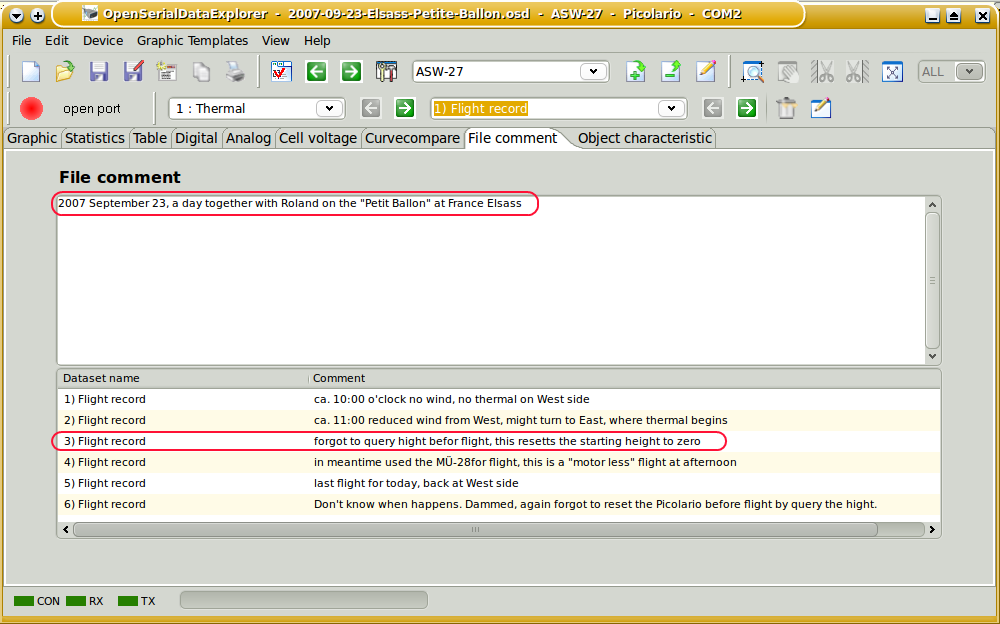

File and Data set comment window

At the file command window it is possible to comment things relevant for all the data sets. As starting point the actual date will be displayed. Initial this is the creation date of the file. This date might be modified of course, if the real data are created or logged at another day.
The file comment window will be viable by selecting its tab. The data set comment will be visible, in a lower table for all data sets part of this file.

The data set comment is visible in graphical view below the graphs, if activated, and can modified here directly. Data and time is displayed in default and can be modified if required. This time mark should be used as indicator at what time this data was created. This comment should be used to write some notes which are data set specific, like events why this is different to others.
Hint : All comments are stored in the data file and might be displayed again.